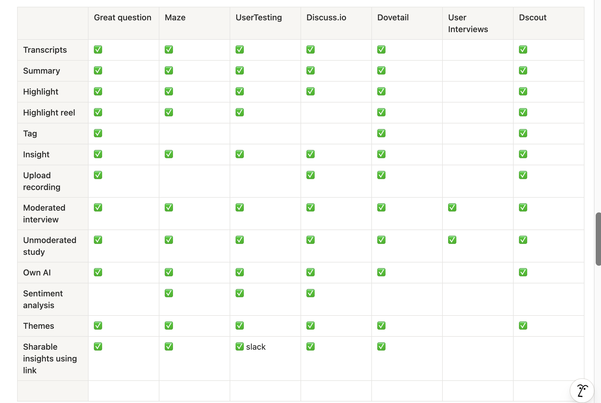
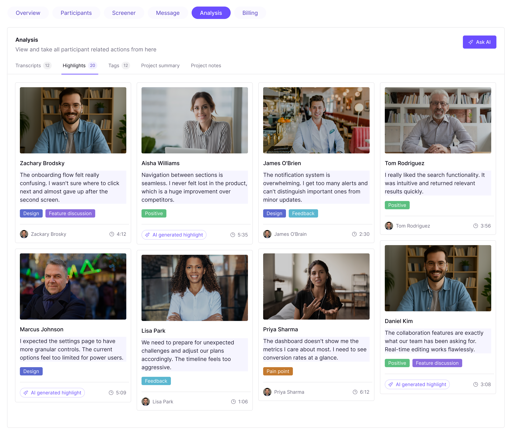
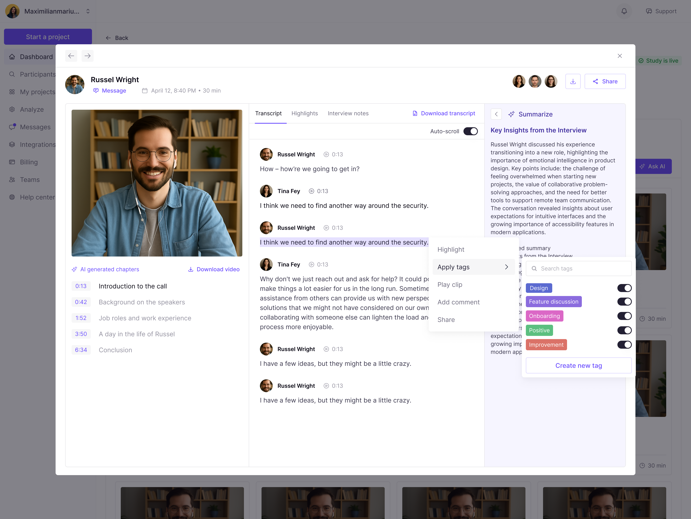
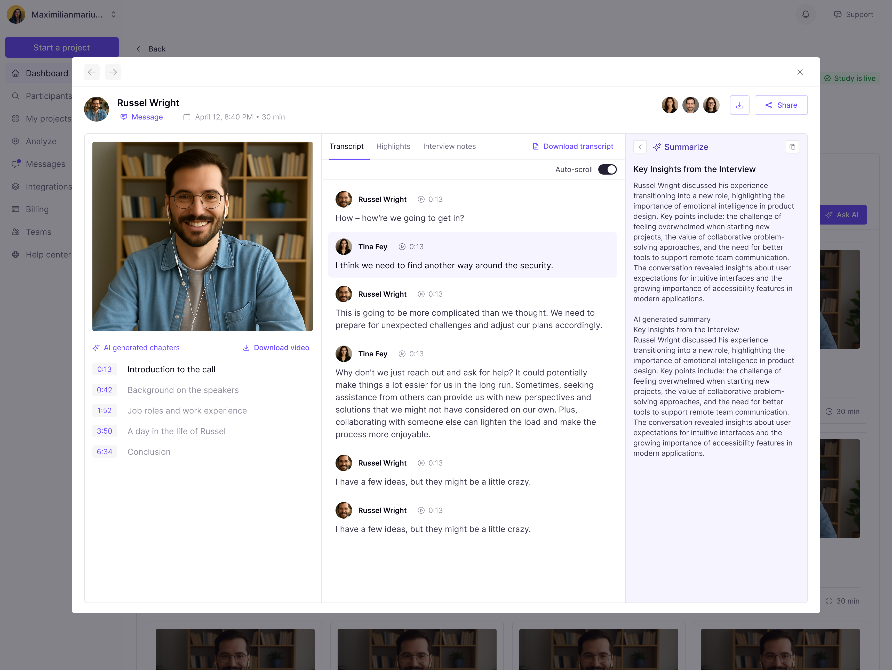

AI + UX Research · Product Design
Designing AI-Powered Research Analysis
CleverX supported moderated video interviews — but once a session ended, that's where the platform stopped. There were no transcripts, no summaries, no way to revisit what was said without rewatching the full recording. Researchers had to do all their analysis outside CleverX, manually.
This wasn't a guess. Researchers kept asking for transcripts. It was one of the most consistent requests we heard, and it pointed to a clear gap: CleverX helped teams run research, but not make sense of it.
The goal was to change that — give researchers AI-powered tools to go from a raw interview recording to structured, shareable findings without leaving the platform.
Context
The Problem
CleverX had no analysis layer. After a moderated interview, here's what a researcher's workflow looked like:
- Rewatch the full recording to find key moments — a 30-minute call could easily take over an hour to process
- Manually note timestamps, pull quotes, and try to hold context across multiple interviews
- Copy everything into a separate document to compile findings for stakeholders
- Repeat for every single interview in the study
The platform handled recruitment, scheduling, and the interview itself — but the moment the call ended, researchers were on their own. For a product positioning itself as an end-to-end research platform, this was a significant gap — both for our users and competitively.
Research
Competitive Analysis
Before designing anything, I studied how every major competitor handles post-interview analysis. I looked at Maze, Lyssna, UserTesting, and User Interviews — specifically how they approach AI transcription, summaries, highlights, and report generation.
I mapped out their feature sets, noted patterns in how they structure analysis workflows, and identified where approaches differed. Then I put together a walkthrough for the team — showing what each platform does, what the common patterns are, and what I thought would work best for CleverX's use case.
This research shaped the direction for the entire feature.

Thinking
Design Decisions
The biggest challenge wasn't deciding what to build — the competitor research made the feature set fairly clear. The hard part was figuring out how to present AI-generated content in a way researchers would actually trust.
AI alongside the source, never replacing it. This was the most important decision. Every competitor I studied kept AI output anchored to original source material, and for good reason — researchers need to verify. So every AI summary in our design sits next to the transcript and original quotes. A researcher can always check what the AI is drawing from. We deliberately avoided any design where the AI summary was the only thing a researcher would see.
Two levels of summary. Each individual interview gets its own AI-generated summary with representative quotes pulled from the transcript. At the project level, a combined summary draws patterns across all interviews. This lets researchers zoom in on a single conversation or zoom out to see themes — depending on what they need at that moment.
Highlights as standalone, quotable pieces. Key moments aren't just marked in the transcript — they're extracted and presented as individual items that can be referenced, tagged, and dropped into reports. The idea was that these highlights become the building blocks for whatever the researcher needs to communicate to their team.
Export designed for stakeholders, not just researchers. PDF reports and CSV exports were designed to be shareable as-is. The goal: a researcher should be able to go from "study complete" to "here are the findings" in a single click, without reformatting anything.
Deliverables
What I Designed
The end-to-end AI analysis experience for moderated interviews:
- AI transcripts — Automatic transcription of recordings with searchable, scannable text
- AI summaries — Interview-level and project-level summaries with representative quotes
- Highlights — Key moments automatically identified and presented as standalone, referenceable pieces
- Insight generation — Structured findings surfaced from raw interview responses
- Export and share — PDF reports and CSV exports, shareable with stakeholders directly



Impact
What Changed
- Shipped a net-new capability that moved CleverX from an interview-only platform to a full research analysis tool — closing a significant competitive gap
- Compressed research analysis from days or weeks of manual work to AI-generated reports in minutes — across transcripts, summaries, highlights, and insights
- Established CleverX's first AI-powered feature set, which became a core part of the product's positioning